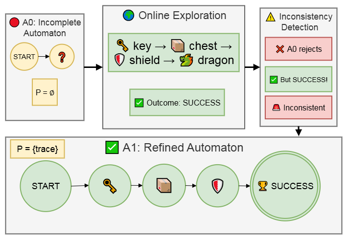
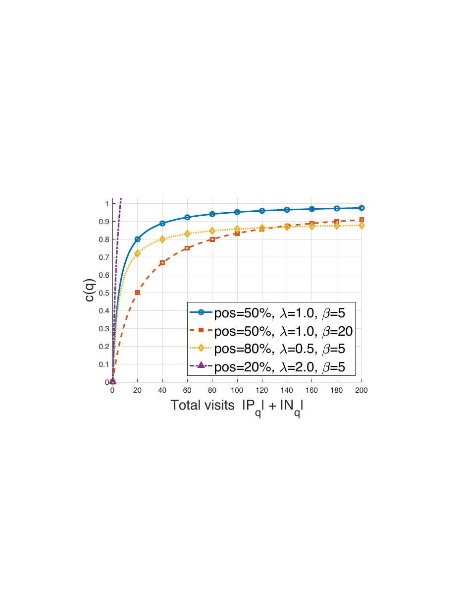
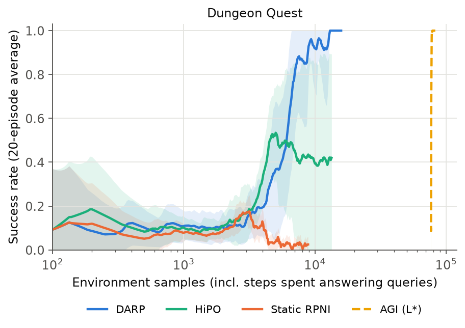
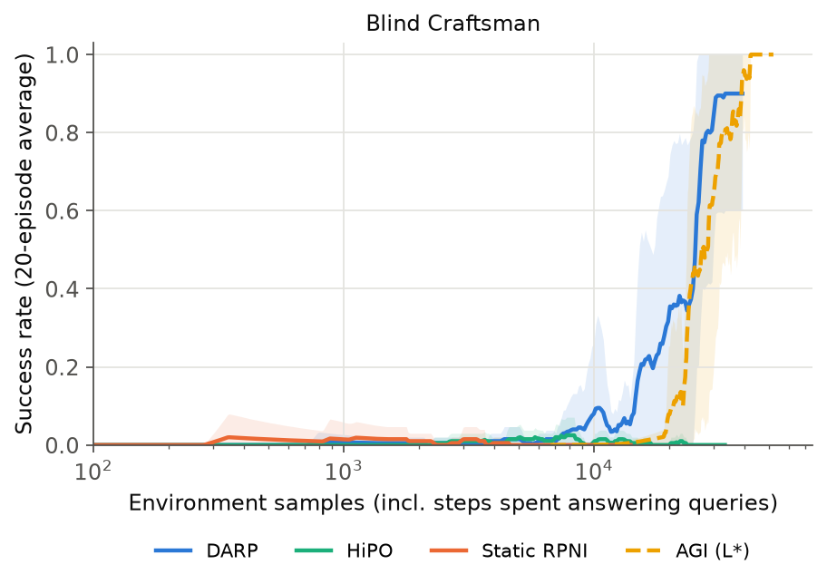
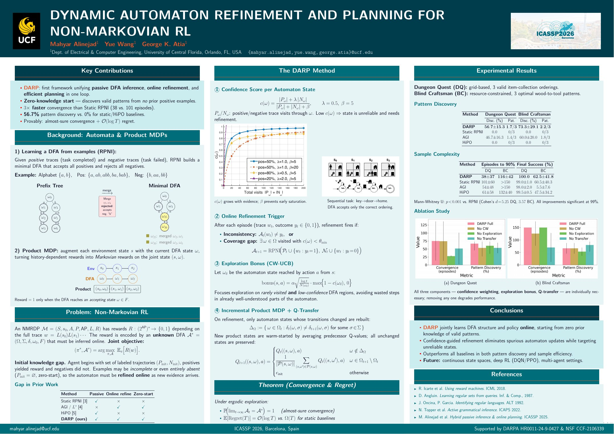

TL;DR Learn the task's automaton while you learn the policy, and fix it when reality disagrees. DARP starts from incomplete knowledge (even zero successful examples), refines its automaton online whenever an episode's outcome contradicts it, and explores where the automaton is least certain, with no oracle queries.

Abstract
Many sequential decision-making problems require agents not only to learn optimal actions, but also to uncover the temporal rules that determine when action sequences are valid. We propose Dynamic Automaton Refinement and Planning (DARP), a reinforcement learning framework for non-Markovian environments with evolving or incomplete task specifications. Unlike prior methods that assume complete knowledge of the task structure or rely on expensive active querying, DARP passively infers deterministic finite automata (DFA) from trajectory data and refines them online through confidence-weighted RPNI, enabling efficient detection and correction of inconsistencies. Exploration bonuses guide the agent toward low-confidence regions, accelerating the discovery of missing patterns. By incrementally updating the product MDP while preserving learned knowledge, DARP supports robust policy learning even as task structures change. Experiments on grid navigation, multi-resource planning, and sequential coordination demonstrate that DARP discovers task patterns more quickly and with fewer spurious refinements than baselines, offering a principled approach to jointly learning task structure and policies in complex domains.
How it works
Passive learners such as RPNI (and our HiPO) learn the task automaton once from a fixed dataset and are stuck with its mistakes. Active learners such as L* need an oracle that answers thousands of membership and equivalence queries. DARP sits in between: it learns from its own episodes and corrects the automaton exactly when the evidence demands it.
- Confidence-weighted automaton learning. RPNI infers a DFA from the positive and negative traces seen so far, and every automaton state carries a confidence score from the evidence that supports it: c(q) = (|Pq| + λ|Nq|) / (|Pq| + |Nq| + β)
- Online refinement. After each episode the observed outcome is compared with the automaton's prediction. The automaton is re-synthesised on an inconsistency (it predicts the wrong outcome) or a coverage gap (the run visits a low-confidence state).
- Confidence-guided exploration. A UCB-style bonus steers the agent toward rarely visited, poorly supported automaton states: bonus(s, a) = α √(log t / N(q)) · max{1 − c(q), 0}
- Incremental product-MDP updates. After a refinement, Q-values of unchanged automaton states are kept, new states are initialised from the old ones at the same position, so learning is not restarted.

Tasks
| Dungeon Quest | Blind Craftsman | |
|---|---|---|
| Grid | 7×7 | 7×7, obstacles, 3 wood sources |
| Goal | reach the dragon with the sword (key → chest) and the shield | go home with 3 tools; carry at most 2 wood; the factory turns wood into tools |
| Valid orders | key→chest→shield, key→shield→chest, shield→key→chest | 1+1+1 (26 steps), 2+1 and 1+2 (20 steps) |
| Initial knowledge | zero positive examples | one pattern (1+1+1) plus negatives |
The agent sees only its position; entering a labelled cell emits an event, and success depends on the event order. In Blind Craftsman, RPNI over-generalises the one known pattern into an automaton that also accepts wrong traces, a direct test of refinement.
Results


| Environment | Method | Samples to 90% success | Runs reaching 90% | Final success | Oracle queries |
|---|---|---|---|---|---|
| Dungeon Quest | DARP | 6,620 ± 1,201 | 10/10 | 100% | 0 |
| HiPO | ≥ 10,021 | 4/10 | 41% | 0 | |
| Static RPNI | not reached | 0/10 | 2% | 0 | |
| AGI (L*) | 77,485 | 10/10 | 100% | 3,286 | |
| Blind Craftsman | DARP | ≥ 24,786 | 9/10 | 90% | 0 |
| HiPO | not reached | 0/10 | 0% | 0 | |
| Static RPNI | not reached | 0/10 | 0% | 0 | |
| AGI (L*) | 30,539 | 10/10 | 100% | 841 |
Reproduced with the open-source code, 10 seeds per method. Samples count every environment step, including the steps needed to answer AGI's queries; runs that never reach 90% count their full budget (≥ marks lower bounds).
What the numbers show
- Learning from scratch. With no successful example to start from, DARP still reaches 100% success in every run; the passive baselines never recover from their initial automaton.
- Refinement fixes wrong automata. In Blind Craftsman, HiPO and Static RPNI follow an automaton that accepts invalid traces (0% success); DARP corrects it and succeeds in 9 of 10 runs.
- Better strategies than the data contained. DARP discovers the shorter 2+1 and 1+2 crafting orders that its initial knowledge missed, and its Dungeon Quest episodes are near-optimal (12.9 steps vs. 12 optimal).
Every component matters
| Variant | Dungeon Quest: episodes to 90% | Blind Craftsman: final success |
|---|---|---|
| Full DARP | 88 | 90% |
| No exploration bonus | 106 | 80% |
| No Q-value transfer | 121 | 55% |
| No coverage-gap trigger | 102 | 60% |
| No refinement | not reached | 0% |
Poster

Try it
git clone https://github.com/mahyar333/DARP.git && cd DARP
pip install -e ".[dev]"
python -m darp.run --config configs/dungeon_quest.yaml # DARP, Static RPNI, HiPO, AGI
python -m darp.plot results/dungeon_quest # figuresPython 3.9+, MIT license. See the repository for the full documentation.
BibTeX
@inproceedings{alinejad2026darp,
title = {Dynamic Automaton Refinement and Planning for Non-Markovian {RL}},
author = {Alinejad, Mahyar and Wang, Yue and Atia, George},
booktitle = {IEEE International Conference on Acoustics, Speech and Signal Processing (ICASSP)},
year = {2026},
doi = {10.1109/ICASSP55912.2026.11461556}
}